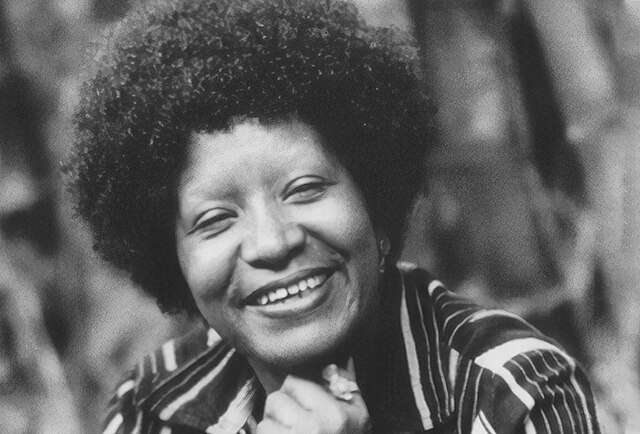

Professores Universitários Negros
Professores Universitários Negros

Lélia Gonzalez – Antropóloga e Professora Universitária
Pioneira nos estudos de raça e gênero no Brasil, Lélia Gonzalez foi uma referência na luta antirracista e feminista.
Saiba mais
Milton Santos – Geógrafo e Professor Universitário
Milton Santos foi um dos maiores geógrafos do Brasil, reconhecido mundialmente por suas pesquisas em geografia humana e crítica.
Saiba mais